01
Suporte Help Desk
Atendimento para que sua equipe não fique parada diante de problemas técnicos.
- Atendimento remoto aos usuários
- Diagnóstico e resolução de problemas
- Suporte a computadores e notebooks
- Programas, impressoras e periféricos
Sua empresa precisa de tecnologia funcionando, não de preocupações com computadores, redes e sistemas.
A CRF Solutions cuida da estrutura tecnológica do seu negócio para que você tenha mais tranquilidade e possa focar no crescimento da sua empresa.

MAIS TRANQUILIDADE PARA O SEU NEGÓCIO
A CRF Solutions nasceu para simplificar a tecnologia dentro das empresas.
Nosso objetivo é ser o departamento de TI terceirizado dos nossos clientes, oferecendo suporte técnico, organização e eficiência para que a tecnologia seja uma aliada — e não uma preocupação no dia a dia.
Vamos conversar sobre sua empresa ↗Da resolução de chamados à administração da infraestrutura, cuidamos do que mantém sua empresa conectada.
Atendimento para que sua equipe não fique parada diante de problemas técnicos.
Equipamentos bem cuidados para garantir desempenho e produtividade.
Gestão dos recursos que sustentam a operação e os dados da sua empresa.
Mais controle e planejamento para a infraestrutura tecnológica.
Quando o atendimento presencial é necessário, vamos até sua empresa para avaliar, instalar e configurar equipamentos e prestar suporte local.
Tenha suporte técnico, manutenção e acompanhamento da sua infraestrutura sem precisar contratar um profissional de TI em tempo integral.
Uma parceria de tecnologia para manter sua empresa funcionando.
Uma estrutura de TI acompanhada por quem entende que cada minuto da sua operação importa.
Atendimento conforme as condições estabelecidas em contrato.
Atendimento adequado à necessidade de cada situação.
Uma relação próxima, considerando a realidade do seu negócio.
Mais visibilidade e cuidado com a infraestrutura tecnológica.
Previsibilidade para planejar o investimento em tecnologia.
Conte com uma equipe de suporte sem montar um departamento interno.
O atendimento remoto permite apoiar sua equipe no dia a dia. Para demandas presenciais, consulte a disponibilidade de atendimento na sua região.
Consulte nossa disponibilidade ↗Conte um pouco sobre sua empresa e o que você precisa. Nossa equipe receberá sua solicitação pelo WhatsApp.
◉FALE DIRETAMENTE PELO WHATSAPP(31) 97106-6831↗Se nossa equipe solicitou, faça o download pelo site oficial do AnyDesk.